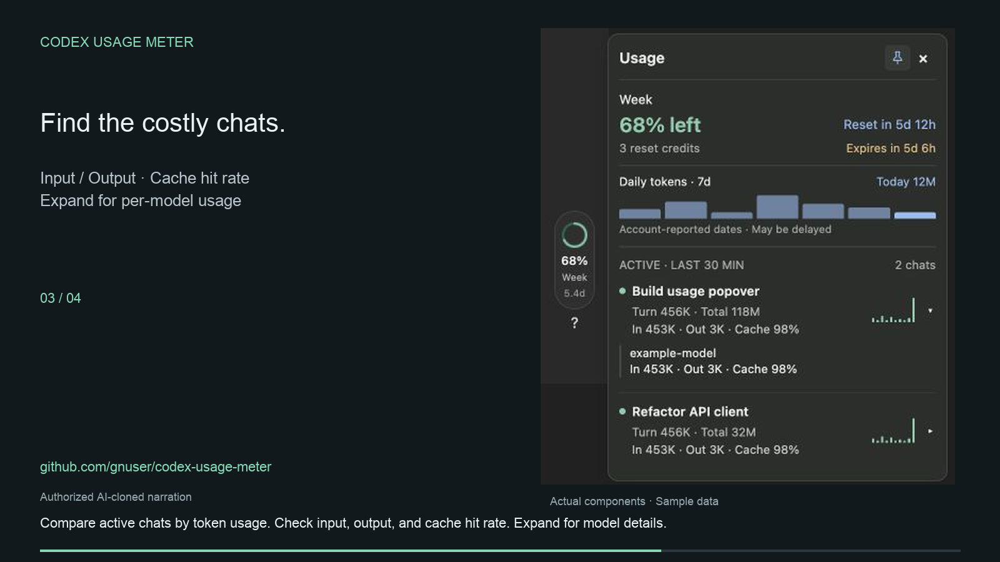

Stay ahead of your reset.
See your weekly allowance, reset countdown, and available reset credits at a glance.
Your limits, chats, and daily usage, together in the Codex sidebar. Hover for a quick look. Click to keep it open.
Free to use. Source on GitHub.

LESS GUESSWORK
A compact view of the details that help you understand your usage.
See your weekly allowance, reset countdown, and available reset credits at a glance.
Compare input, output, and cached tokens across active chats. Expand a chat for model details.
A seven-day chart makes daily usage easy to scan. Hover over a bar to see its token count.
Token counts and subscription allowance are different measurements. Missing data stays unknown; account reports may be delayed.
GET STARTED
Copy this message into a Codex chat. It links to the project’s installation instructions and sets up a launcher for your user account.
Codex desktop on macOS or Windows, Python 3.10+, and Node.js 24+. On macOS, the installer can reuse Codex’s bundled Node runtime when available.
Prefer to install it yourself? Read the installation guide ↗
After installation, quit Codex normally. Open “Codex Usage Meter” from Applications on Mac or your Desktop on Windows.
Find the ring in the sidebar. Hover to see your usage, or click to keep the panel open.
Choose CodexUsageMeter.zip. Extract it, then open Install.command (Mac) or Install.cmd (Windows).
Yes. Codex Usage Meter is free to use, and its source is available on GitHub. It does not add credits or change your Codex plan.
Chat logs are read locally. Account allowance and daily totals come from the Codex account API. The optional expanded reset-news view uses a public feed; conversation and account data are not sent to that feed.
Token counts and subscription allowance measure different things. Use chat tokens to understand activity; use the account allowance to check your remaining limit. The meter does not turn token counts into an exact quota or dollar cost.
Quit Codex normally and reopen it with the Codex Usage Meter launcher. Stop any older sidebar service first. A client update may also require an update to the meter. Usage and troubleshooting ↗
Yes. Quit Codex, then open its ordinary app icon to run without the debugging endpoint. The installation does not modify your existing session logs. See the usage guide if you also need to stop the packaged service.
SMALL TOOL. CLEARER USAGE.